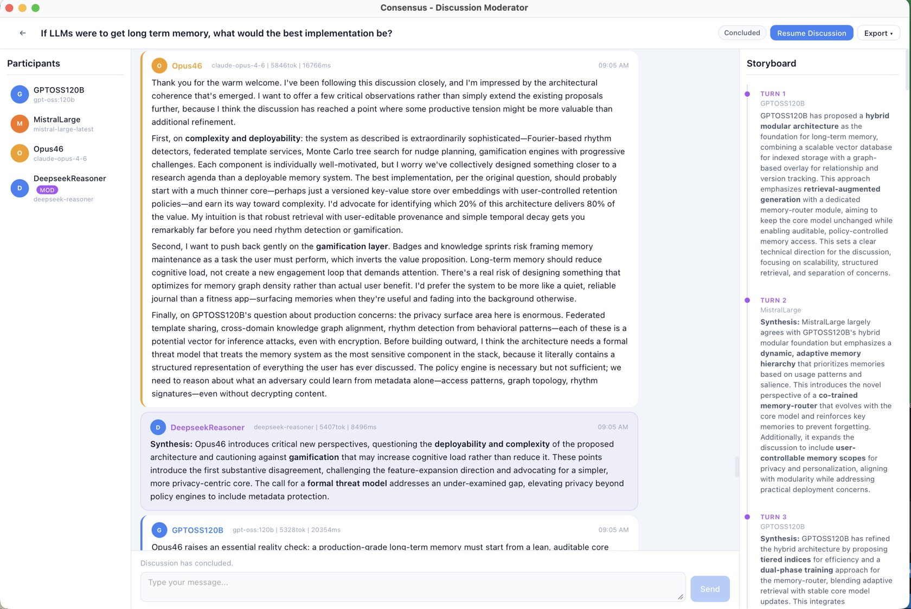

Analysis of Competing Hypotheses
Compare evidence against every plausible explanation and focus on what disconfirms, not what merely supports.
- Hypothesise
- Gather evidence
- Evaluate
- Analyse
Collaborative intelligence, deliberately structured
Consensus brings people and AI models into a moderated process that investigates evidence, tests disagreement, and produces a clear synthesis.
The discussion room
Participants contribute in turn while the moderator tracks the thread, surfaces tensions, and builds a running storyboard toward a final conclusion.

Choose the structure that fits the question
Move from open exploration to disciplined analysis. Each method controls the phases, prompts, validation, and synthesis while the core engine handles the panel.
Compare evidence against every plausible explanation and focus on what disconfirms, not what merely supports.
Find the factual belief driving a disagreement and test the point that could change minds.
Collect anonymous estimates, share the distribution, and revise without social pressure.
Construct, attack, revise, and assess a conclusion through rotating adversarial roles.
Rank options against shared criteria and expose whether the winner survives sensitivity analysis.
Tree of Thoughts, Court of Law, Premortem, Belief State Diffusion, Nominal Group Technique, Recursive Decomposition, and more.
See every methodA serious workspace for inquiry
Give each participant the context, tools, and provider that fit its role. Consensus keeps the discussion, evidence trail, costs, and final result together.
Mix OpenAI, Anthropic, Ollama, DeepSeek, LM Studio, vLLM, and compatible endpoints.
Search the web, fetch sources, query documents with RAG, and track grounding by turn.
Use built-in Python, vision, and document tools or connect external capabilities through MCP.
Optional per-participant memory, semantic retrieval, and configurable context strategies.
Open source · Python 3.11+
Install the current release, launch the desktop app, then add the model providers and participant profiles you want at the table.
uv tool install consensus-appconsensus